엑셀 표를 끌어다 놓아 그래프를 만드는 방법 — 주소 열기부터 첫 그래프까지
https://forrestgump3210-wq.github.io/graphbuilder_yk/그래프 빌더는 엑셀 표를 끌어다 놓아 그래프를 만드는 웹 프로그램입니다. 주소만 열면 바로 쓸 수 있어요. 열 이름을 칸에 끌어다 놓기만 하면 상자 그림·점·선·막대 그래프가 그려집니다. 엑셀을 쓸 줄 알면 3분 안에 첫 그래프를 만들 수 있습니다.
설치 없음 · 데이터는 밖으로 나가지 않아요
데이터는 내 컴퓨터의 브라우저 안에서만 처리되고, 서버로 전송되지 않습니다. 파일을 어디에 올리는 것이 아니라서 사내 데이터도 안심하고 쓸 수 있습니다.
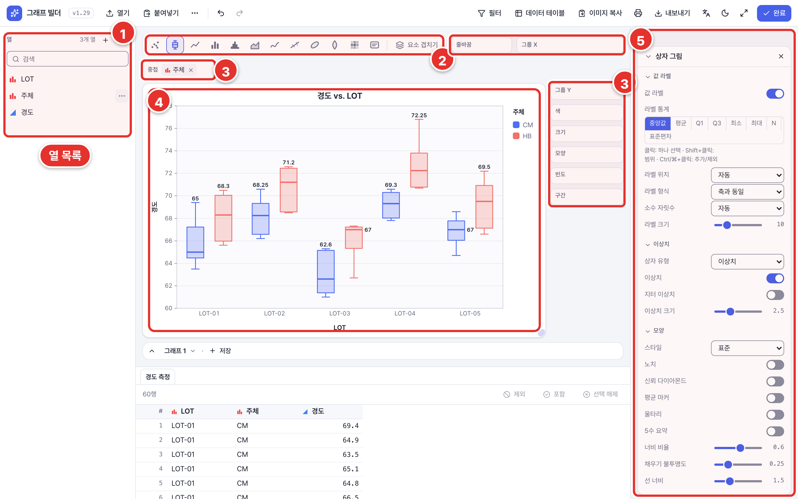
설치할 것도, 내려받을 것도 없어요. 인터넷 브라우저에서 아래 주소를 여는 것이 전부입니다.
https://forrestgump3210-wq.github.io/graphbuilder_yk/자주 쓰려면 즐겨찾기에 넣어 두세요. 주소창 오른쪽 별(★)을 클릭하거나 Ctrl+D (Mac은 ⌘+D)를 누릅니다. 그다음부터는 즐겨찾기에서 클릭 한 번으로 열려요.
처음 화면의 데이터 열기 카드에 CSV나 엑셀 파일을 끌어다 놓거나, 엑셀에서 복사한 표를 붙여넣기로 넣습니다. 연습만 해 보고 싶다면 샘플 사용을 클릭하세요. 자세한 순서는 3. 첫 그래프 만들기에 그림과 함께 있어요.
그래프 빌더에 넣은 표를 다른 곳으로 옮기고 싶으면 데이터 표 머리줄의 복사…를 누르세요. 데이터 복사 창에서 형식을 고릅니다. 표 데이터 (탭 구분)은 Excel·Google 시트에 칸마다 붙여넣을 때, 열 맞춤 텍스트는 열 폭을 공백으로 맞춘 글을 메신저·메일·메모장에 붙일 때, CSV 파일 내려받기는 UTF-8 BOM의 CSV 파일로 받을 때 씁니다. 행은 전체, 선택한 행, 그래프에 쓰는 행 가운데 고를 수 있고, 제외한 행 빼기는 기본으로 켜져 있어 제외한 행은 빠집니다. 열은 전체 또는 골라서, 머리글 포함과 숫자 표기(원본 그대로 / 소수점 자리 고정)도 정할 수 있고, 창의 미리보기에서 처음 5행을 확인한 뒤 복사하세요.
데이터 표에서 행을 선택한 채로 Ctrl+C(Mac은 ⌘+C)를 누르면 창을 띄우지 않고 선택한 행이 표 데이터로 바로 복사돼요.
그래프 빌더가 새로 나오면 화면 맨 위에 알림 띠가 나타나요. 1 새로고침을 클릭하면 바로 최신 버전으로 바뀝니다. 다시 내려받거나 설치할 필요가 없어요. 지금은 바쁘다면 2 나중에를 클릭해 띠를 닫아 두세요. (브라우저를 닫을 때까지 다시 나오지 않아요.)
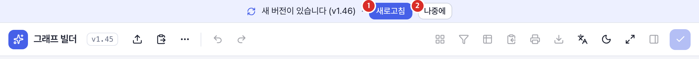
새로고침해도 하던 표와 그래프는 그대로 남아 있어요(5장 참고). 화면 왼쪽 위의 v숫자가 지금 쓰고 있는 버전이에요.
붙여넣거나 연 데이터는 서버로 전송되지 않고, 내 컴퓨터의 브라우저 안에서만 처리되고 저장돼요. 그래서 사내 데이터도 안심하고 쓸 수 있습니다. 대신 다른 PC나 다른 브라우저에서는 보이지 않으니 중요한 데이터는 원본 엑셀 파일을 보관하세요. 자세한 내용은 5. 내 데이터는 어디에 저장되나요를 보세요.
예제는 LOT별 경도를 상자 그림으로 그리는 거예요. 열 이름은 LOT, 주체, 경도 세 개입니다. (Mac에서는 Ctrl 대신 ⌘을 누르세요.)
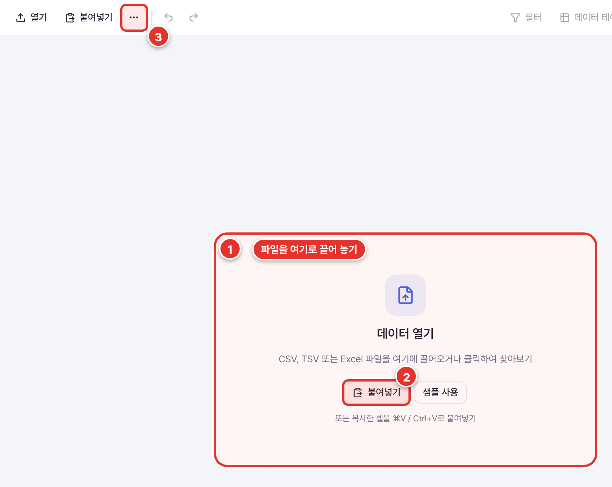
처음 화면에는 데이터 열기 카드가 보여요. CSV나 엑셀 파일은 카드 위로 끌어다 놓으면 열립니다. 엑셀에서 복사한 표는 붙여넣기를 클릭하세요(다음 단계).
연습하고 싶다면내 데이터 없이 써 보려면 카드의 샘플 사용을 클릭하세요. 위쪽 ⋯(더보기) ▸ 샘플도 같아요.
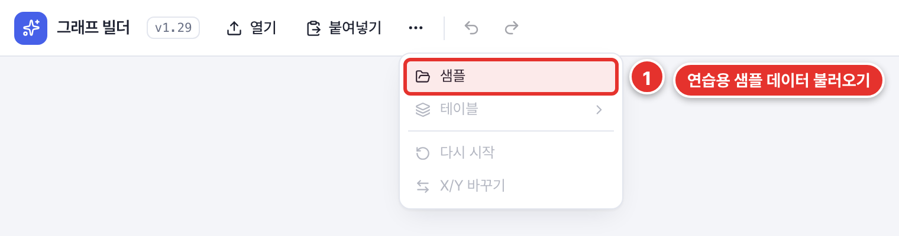
샘플의 열 이름은 영어입니다. 아래 설명의 LOT은 Lot으로, 경도는 Thickness (nm)로 바꿔서 따라 해 보세요.
엑셀에서 열 이름이 있는 줄부터 표를 드래그해 선택하고 Ctrl+C를 누릅니다. 그래프 빌더 화면 아무 곳이나 클릭한 뒤 Ctrl+V를 누르세요. (또는 붙여넣기를 클릭.)
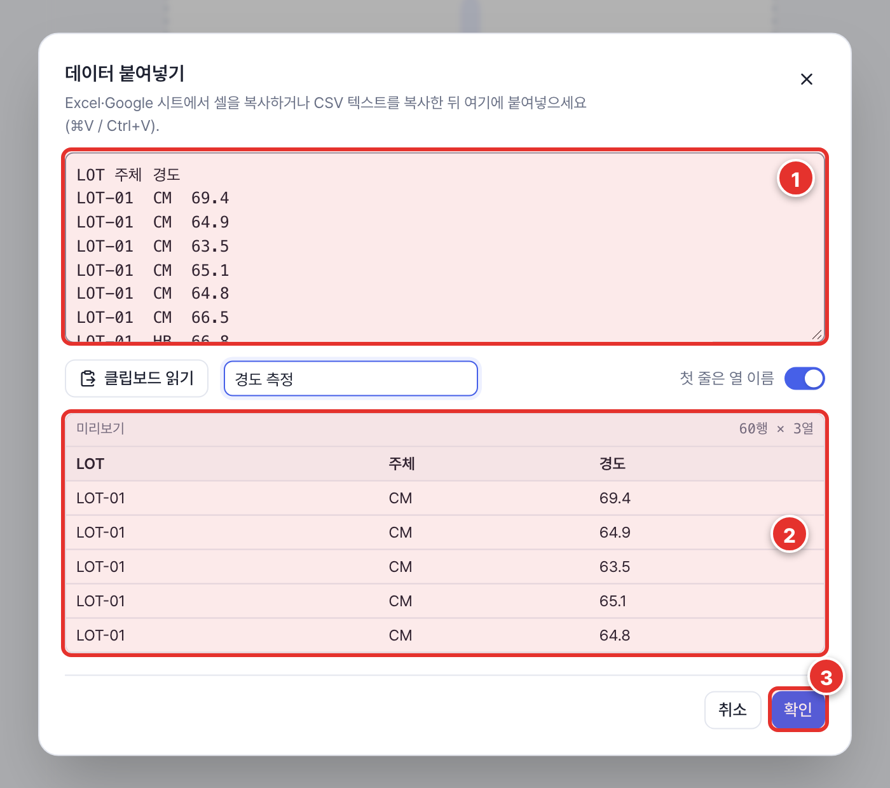
2 미리보기에서 열 이름과 숫자가 맞는지 보고, 3 확인을 클릭하면 끝입니다. 파일로 열 때처럼 CSV·엑셀 파일을 화면에 끌어 놓아도 됩니다.
왼쪽 열 목록에서 이름을 마우스로 누른 채 그래프 쪽으로 끌어 오면 놓을 자리가 파랗게 나타납니다. Y는 재고 싶은 숫자(세로축), X는 나눠서 볼 기준(가로축)이에요.
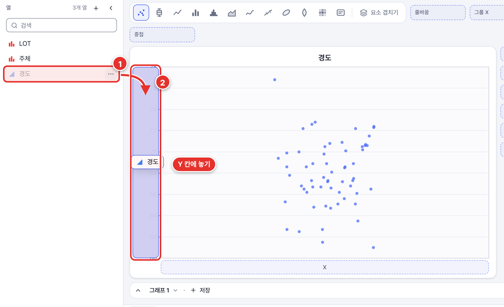
경도를 끌어서 2 Y 칸에 놓기 ※ v1.72부터 그래프 띠는 없습니다(그림 아래쪽의 ‘그래프 1 · + 저장’ 줄은 이전 버전 화면).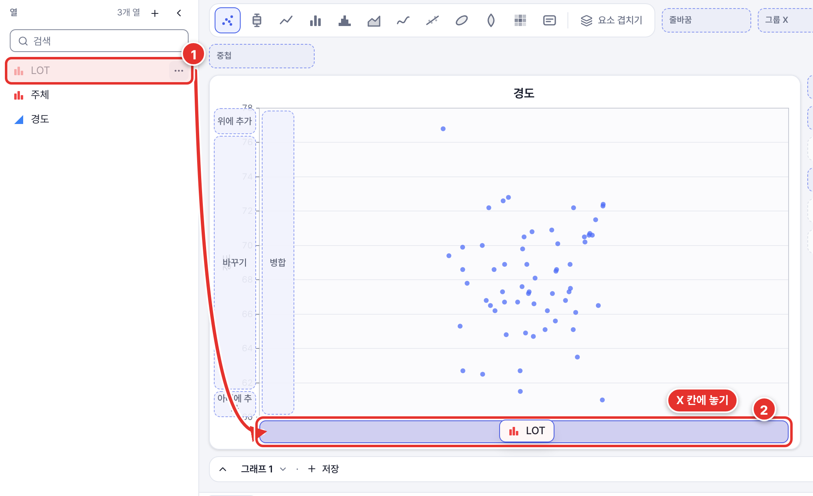
LOT을 끌어서 2 X 칸에 놓기 ※ v1.72부터 그래프 띠는 없습니다(그림 아래쪽의 ‘그래프 1 · + 저장’ 줄은 이전 버전 화면).놓으면 바로 점 그래프가 그려져요. 잘못 놓았으면 Ctrl+Z로 되돌립니다.
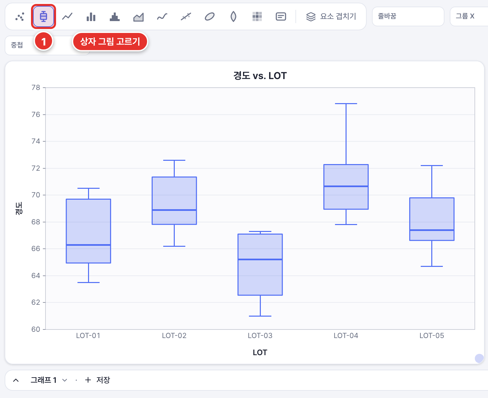
그래프 위쪽의 아이콘 줄에서 두 번째 아이콘(상자 그림)을 클릭합니다. 마우스를 올리면 이름이 나와요. 상자는 값의 가운데 절반, 상자 안의 굵은 선은 가운데 값(중앙값), 위아래 선은 값이 퍼진 범위입니다.
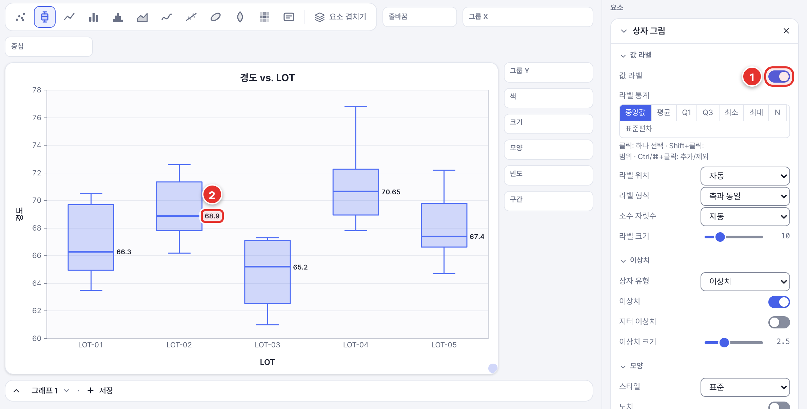
오른쪽 요소 패널 맨 위의 값 라벨 스위치를 클릭해 켭니다. 상자마다 중앙값이 숫자로 나타나요. 평균 등으로 바꾸려면 라벨 통계에서 다른 항목을 클릭하세요.
완성! 이렇게 3분이면 첫 그래프가 나옵니다. 이제 아래 “다음 단계”에서 필요한 기능만 골라 쓰세요.
나누고 싶은 열(예: 주체)을 위쪽 중첩 칸으로 끌어 놓으면 색마다 상자가 나란히 그려지고 오른쪽에 색 설명(범례)이 생겨요. 점·선 그래프는 오른쪽 색 칸에 놓아도 됩니다.
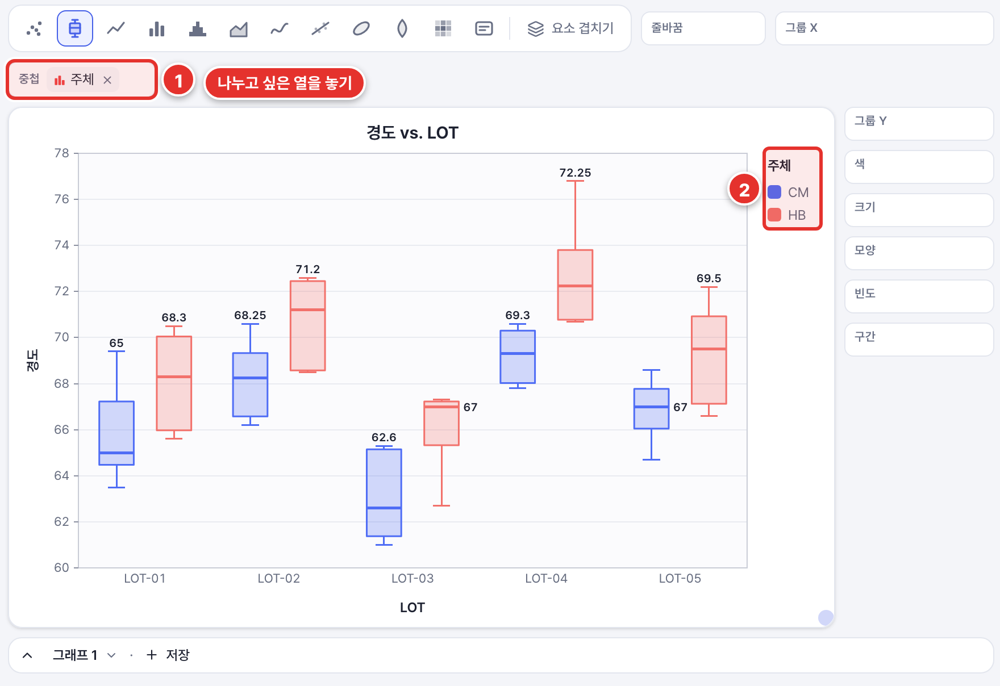
왼쪽 열 목록에서 열 이름을 우클릭 ▸ 규격 한계…를 클릭합니다. 규격 상한 (USL)과 규격 하한 (LSL) 값을 적고 확인을 클릭하면 그래프에 빨간 점선이 그려집니다. (예: 상한 72, 하한 62)
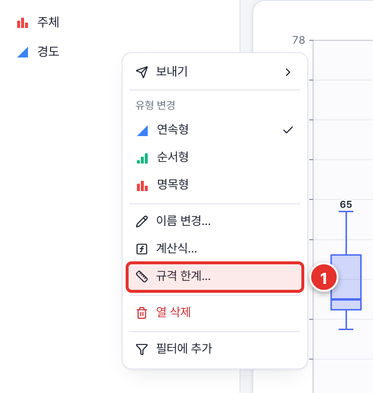
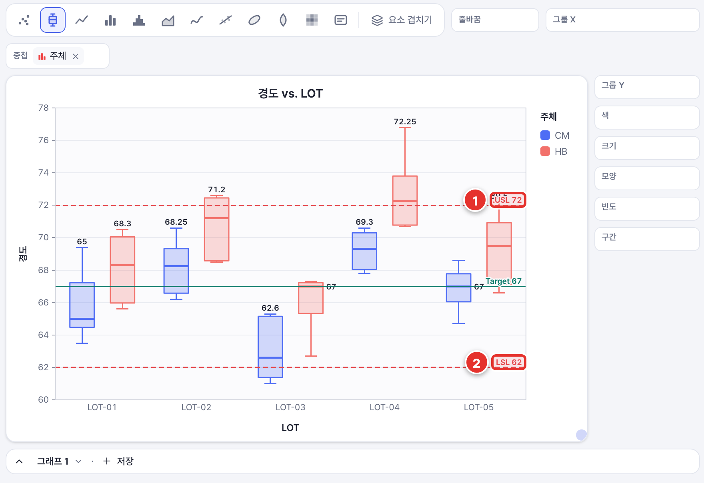
축 이름 옆에 있는 작은 설정 단추를 클릭하면 축 설정 창이 열립니다. 최솟값·최댓값·증분을 적으면 눈금 범위가 바뀌고, 비워 두면 자동이에요. (단추는 마우스를 올리면 진해집니다.)
같은 창의 관리한계를 켜면 그래프가 그린 값의 평균과 ±3σ에서 계산한 중심선(CL)·관리 상한(UCL)·관리 하한(LCL)이 점선-점(보라색)으로 나타나요. 규격 한계(빨간 점선)와 달리 데이터에서 계산한 선이라 자료가 바뀌면 같이 움직이고, 눈금 범위를 넓히지는 않아요(범위 밖이면 창에서 알려 줍니다).
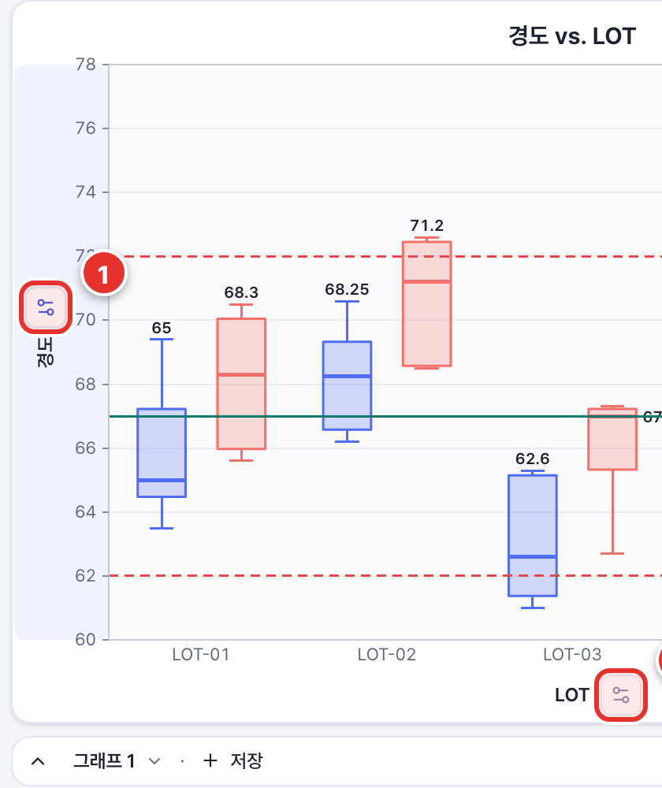
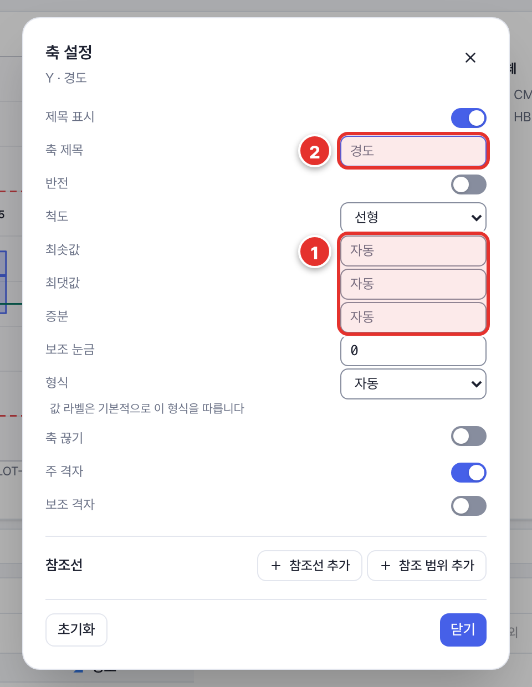
위쪽 도구 줄의 단추(열기·붙여넣기·필터·데이터 테이블·이미지 복사·내보내기·완료 등)는 아이콘만 보여요. 마우스를 올리면 이름이 나오고, 이 안내서의 굵은 이름이 바로 그 이름입니다.
1 이미지 복사(Ctrl+Shift+C)를 클릭한 뒤 PPT나 메일에서 Ctrl+V를 누르면 그래프가 그림으로 붙습니다. 2 프린터 아이콘(Ctrl+P)은 그래프만 인쇄하며, 인쇄 창에서 “PDF로 저장”을 고르면 PDF 파일이 돼요.
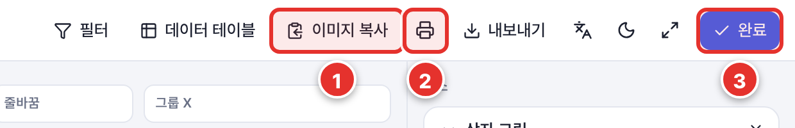
오른쪽 위 완료(위 그림 3)를 클릭하면 패널이 사라지고 그래프만 크게 보여요. 화면을 캡처하거나 회의에서 보여 줄 때 좋습니다. 다시 고치려면 같은 자리의 편집을 클릭하세요.
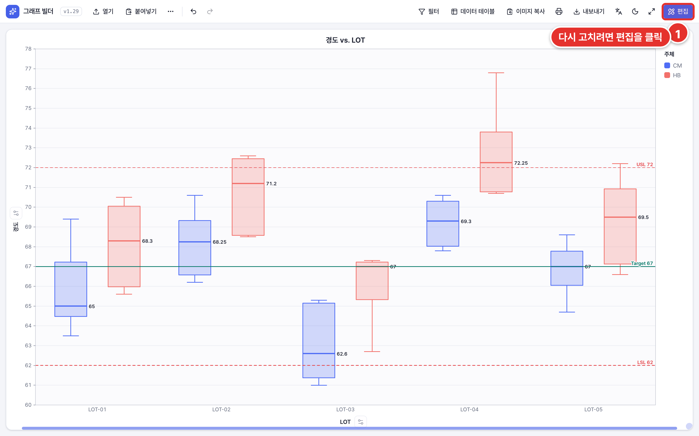
분석할 열을 Y에, 로트 같은 그룹 열을 X에 놓고 규격 한계(위 2번)를 넣은 다음, 오른쪽 설정 패널 맨 아래 분석 섹션에서 원하는 분석을 켜 보세요. 그래프 아래에 표와 진단이 나타납니다. 진단은 숫자만 늘어놓지 않고 “공정능력 부족 (Cpk 0.57 < 1.0)”, “평균이 규격 중심에서 치우침” 같이 이유를 쉬운 말로 알려 줍니다(정해진 규칙으로 만든 1차 안내). 그룹 이름을 클릭하면 그 그룹의 진단을 볼 수 있고, 표 복사로 엑셀에 붙여 넣을 수 있습니다.
진단 기준 설정 — 진단의 등급과 표현(Cpk 우수 1.67 / 양호 1.33 / 보통 1.00, 표본 크기 경고 10·30·100, 상관 강도 경계 0.2·0.4·0.7, 기본 α 0.05 등)은 업계 관례이지만 고객·회사가 정한 합격선이 우선합니다. 분석 섹션 제목 오른쪽의 작은 톱니바퀴 단추를 누르면 “진단 기준 설정” 창이 열리고, 묶음별 초기화와 전체 초기화가 있으며 경계값이 오름차순(예: 1.00 < 1.33 < 1.67)이 아니면 단추가 꺼진 채로 이유가 표시됩니다. 이 그래프에 적용은 값을 이 그래프와 함께 저장하고(사양 파일에도 들어갑니다), 앱 기본값으로 저장은 같은 값을 새로 만드는 그래프의 기본값으로도 저장합니다. 바꾼 값이 적용 중이면 모든 분석의 방법 줄과 고정한 캡션에 “기준: 사용자 설정”이 표시됩니다. 기준을 바꿔도 계산된 숫자는 그대로이고 진단의 등급과 표현만 달라집니다.
숫자가 맞는지 직접 확인해 보려면 ⋯ 메뉴 ▸ 검증 데이터에서 R·NIST·Excel 도움말처럼 공개된 참조값이 있는 데이터를 열어 보세요. 분석이 켜진 그래프가 준비되어 화면의 값을 docs/statistics.md 3.7의 기대값과 바로 비교할 수 있습니다. ⋯ 메뉴 ▸ 검증 데이터 ▸ 관리도 예제와 CUSUM/EWMA 예제·p 관리도 예제·c 관리도 예제도 참고하세요.
Y 칸에 열을 2개 이상 쌓았을 때 위쪽 도구 줄의 대시보드(격자 아이콘)를 클릭하면, Y 항목마다 한 칸씩 나눠 한 화면에 모아 보여 줘요(4개면 2×2). 칸은 편집 중인 그래프를 그대로 따라가요. 고치려면 칸의 ⋯ 메뉴 ▸ 원본 그래프 편집(칸을 더블클릭해도 같아요)으로 편집기에 돌아가 그래프를 고친 뒤 다시 대시보드를 클릭하면 모든 칸에 반영돼 있어요. Y가 하나뿐이면 이 단추가 흐리게 보이고, 누르면 “Y 항목이 2개 이상일 때 쓸 수 있습니다”라는 안내만 나와요. 한 테이블에는 그래프도, 대시보드도 하나씩이에요(v1.72부터).
.gbx.json 파일이 내려받아집니다(데이터는 들어 있지 않고 그래프 설정만 들어 있어요). 같은 열이 있는 표를 연 뒤 내보내기 ▸ 사양 로드로 다시 불러옵니다.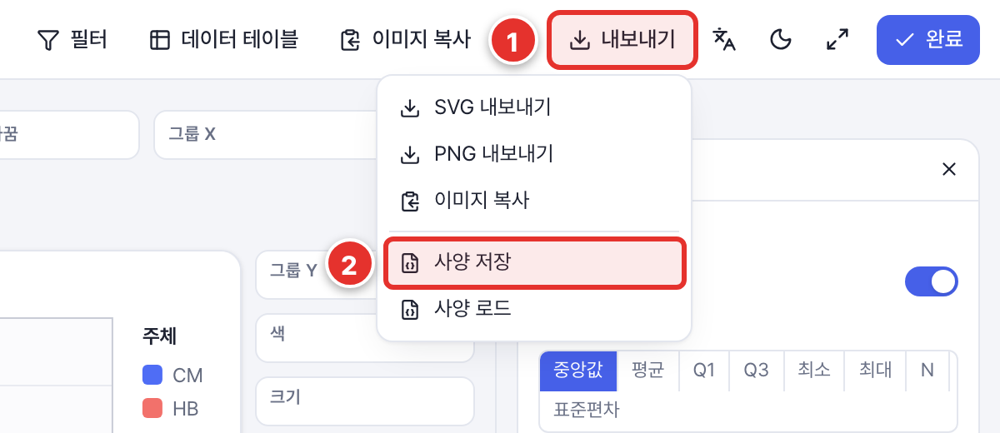
| 이럴 때 | 이렇게 해 보세요 |
|---|---|
| 화면이 하얗게 비어요 | F5로 새로고침하세요. 그래도 안 되면 Chrome이나 Edge로 열어 보세요. |
| 붙여넣기가 안 돼요 | 엑셀에서 셀 범위를 선택하고 Ctrl+C를 누른 뒤(선택 둘레에 점선이 움직여야 해요), 그래프 빌더 화면을 한 번 클릭하고 Ctrl+V를 누르세요. 그래도 안 되면 붙여넣기를 클릭하고 나온 칸 안에서 Ctrl+V를 누르세요. |
| 숫자가 글자로 들어와요 (그래프가 이상하게 나뉘어요) | 왼쪽 열 목록에서 그 열을 우클릭 ▸ 유형 변경에서 연속형을 클릭하세요(열 이름 옆이 파란 삼각형이면 숫자예요). 연속형이 흐려서 안 눌리면 그 열에 12mm, N/A 같은 글자가 섞여 있다는 뜻이에요. 엑셀에서 숫자만 남기고 다시 붙여넣으세요.
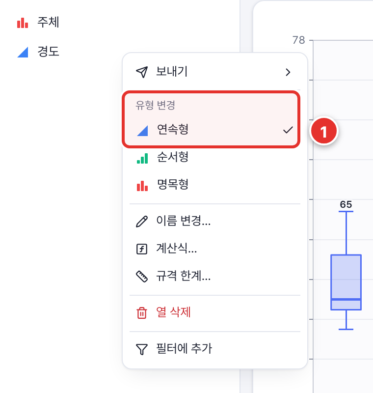 |
| 열이 칸에 안 놓여요 | 크기·빈도·구간 칸에는 숫자 열만 놓을 수 있어요. 글자 열은 X, 중첩, 색 칸을 쓰세요. |
| 이미지 복사가 안 돼요 | “클립보드에 복사하지 못했습니다”가 나오면 내보내기 ▸ PNG 내보내기로 파일로 저장한 뒤 PPT에 끼워 넣으세요. |
| 어제 하던 게 안 보여요 | 다른 PC·다른 브라우저·시크릿 창이거나, 브라우저 기록을 지운 경우예요. 주소가 다르게 열린 경우(부록의 직접 실행 등)도 저장 공간이 따로입니다. 주소가 https://forrestgump3210-wq.github.io/graphbuilder_yk/ 맞는지 확인하세요. (5. 참고) |
| “새 버전이 있습니다” 띠가 계속 나와요 | 새로고침을 클릭해도 그대로라면 Ctrl+F5 (Mac은 ⌘+Shift+R)로 강제 새로고침하세요. 그래도 같으면 담당자에게 알려 주세요. |
| 화면이 예전 모양이에요 | 즐겨찾기로 열어도 보통은 항상 최신 버전이 열려요. 예전 모양이 보이면 Ctrl+F5로 강제 새로고침하세요. |
| 사내망에서 주소가 안 열려요 | 담당자에게 알려 주세요. 맨 뒤 부록의 직접 실행으로 시작할 수도 있습니다. 처음 한 번만 인터넷 연결이 필요해요. |
주소가 막힌 사내망이거나 인터넷이 없는 PC라면, 실행 폴더를 내 PC에 받아 직접 실행할 수 있어요. 대신 처음 한 번은 인터넷이 필요하고 1~3분 걸립니다. 평소에는 앞의 “주소로 열기”가 훨씬 간단하니, 꼭 필요한 경우에만 쓰세요.
담당자에게 그래프 빌더 실행용 ZIP 파일을 요청해 받습니다. 받은 파일은 내려받기 폴더에 두세요. (연락처는 이 문서 맨 아래 [담당자 이름/연락처])
내려받은 파일을 우클릭 ▸ 모두 압축 풀기(Mac은 더블클릭) 합니다. 반드시 풀어서 나온 폴더 안에서 실행하세요. 압축 파일 안에서 바로 실행하면 안 돼요.
Windows: 폴더 안의 start.bat을 더블클릭합니다.
Mac: start.command를 우클릭 ▸ 열기를 클릭합니다.
검은 창에서 준비가 끝나면 브라우저가 저절로 열려 그래프 빌더가 나타납니다. 처음엔 필요한 것을 내려받느라 1~3분 걸려요. 다음부터는 바로 열립니다.
처음 한 번만 나오는 경고
start.command를 우클릭 ▸ 열기를 클릭하고 경고창에서 한 번 더 열기를 클릭합니다. (맥 버전에 따라 시스템 설정 ▸ 개인정보 보호 및 보안 아래쪽의 그래도 열기를 눌러야 할 수도 있어요.)start.bat을 한 번 더 더블클릭하세요. (Mac은 Homebrew가 없으면 nodejs.org에서 LTS 버전을 설치한 뒤 다시 실행합니다.) 이미 설치돼 있어도 버전이 22.12보다 낮으면 “버전이 너무 낮습니다”라고 알려 주니, nodejs.org에서 LTS 버전(22 또는 24)으로 업데이트한 뒤 다시 실행하세요.쓰는 동안은검은 창을 닫지 마세요. 창을 닫으면 프로그램도 꺼집니다. 거추장스러우면 최소화만 하세요.
끝낼 때는검은 창을 클릭하고 Ctrl+C를 누릅니다. Windows에서 “끝내시겠습니까(Y/N)?”라고 물으면 Y를 입력하고 Enter를 누르세요. 다음에 쓸 때는 같은 파일을 다시 더블클릭하면 됩니다.
새 버전은직접 실행에는 새 버전 알림이 나오지 않아요. 새 버전이 필요하면 담당자에게 새 실행 폴더를 받아 바꿔 쓰세요.
start.bat이 바로 꺼질 때start.bat을 우클릭 ▸ 관리자 권한으로 실행해 보세요. 압축을 풀지 않고 실행한 것은 아닌지도 확인하세요. Node.js를 방금 설치했다면 창을 닫고 한 번 더 실행하세요. 그래도 안 되면 담당자에게 알려 주세요.